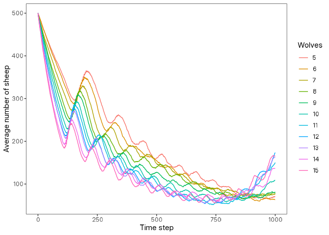

Overview
Note: The CRAN release of
logolinkbreaks with the recent NetLogo patch updates because the BehaviorSpace XML format changed. The details are in this GitHub issue. If your experiments fail to run, install the development version oflogolinkfrom GitHub as shown in the Installation section below. An updated CRAN release will be submitted soon.
logolink is an R package that simplifies setting up and running NetLogo simulations directly from R. It offers a modern, streamlined interface for running models, following the tidyverse principles and integrating seamlessly with the broader tidyverse ecosystem.
The package is designed to work with NetLogo 7.0.1 and above. If you need support for earlier NetLogo releases (up to 7.0.0), use an older version of this package.
If you find this project useful, please consider giving it a star!

The continuous development of
logolinkdepends on community support. If you can afford to do so, please consider becoming a sponsor.

Another R Package for NetLogo?
While other R packages connect R to NetLogo, logolink is currently the only one that fully supports the latest NetLogo release. It is actively maintained, follows tidyverse conventions, and is designed to be simple and straightforward to use.
For context, RNetLogo works only with older versions (up to version 6.0.0, released in December 2016) and has not been updated since June 2017. nlrx provides a powerful framework for managing experiments and results, but supports only up to NetLogo 6.3.0 (released in September 2022) and has many unresolved issues. logolink complements these packages by focusing on simplicity, full compatibility with NetLogo 7, and seamless integration into modern R workflows.
Installation
You can install the released version of logolink from CRAN with:
install.packages("logolink")And the development version from GitHub with:
# install.packages("remotes")
remotes::install_github("danielvartan/logolink")Usage
logolink usage is very straightforward. The main functions are:
-
create_experiment: Create a NetLogo BehaviorSpace experiment XML file. -
run_experiment: Run a NetLogo BehaviorSpace experiment.
Along with this package, you will also need NetLogo 7.0.1 or higher installed on your computer. You can download it from the NetLogo website.
After installing NetLogo and logolink, start by loading the package with:
Setting the NetLogo Path
logolink will try to find out the path to the NetLogo installation automatically. This is usually successful, but if it fails, you will need to set it manually. In that case, see the documentation for the run_experiment function for more details.
Creating an Experiment
To start running your model from R you first need to setup an experiment. You can do this by setting a BehaviorSpace experiment with the create_experiment function. This function will create a XML file that contains all the information about your experiment, including the parameters to vary, the metrics to collect, and the number of runs to perform.
Alternatively, you can set up your experiment directly in NetLogo and save it as part of your model. In this case, you can skip the create_experiment step and just provide the name of the experiment when running the model with run_experiment.
Example:
setup_file <- create_experiment(
name = "Wolf Sheep Simple Model Analysis",
repetitions = 10,
sequential_run_order = TRUE,
run_metrics_every_step = TRUE,
setup = "setup",
go = "go",
time_limit = 1000,
metrics = c(
'count wolves',
'count sheep'
),
run_metrics_condition = NULL,
constants = list(
"number-of-sheep" = 500,
"number-of-wolves" = list(
first = 5,
step = 1,
last = 15
),
"movement-cost" = 0.5,
"grass-regrowth-rate" = 0.3,
"energy-gain-from-grass" = 2,
"energy-gain-from-sheep" = 5
)
)If you want to inspect the created experiment file, you can use the inspect_experiment_file function:
setup_file |> inspect_experiment_file()
#> <experiments>
#> <experiment name="Wolf Sheep Simple Model Analysis" repetitions="10" sequentialRunOrder="true" runMetricsEveryStep="true" timeLimit="1000">
#> <setup>setup</setup>
#> <go>go</go>
#> <metrics>
#> <metric>count wolves</metric>
#> <metric>count sheep</metric>
#> </metrics>
#> <constants>
#> <enumeratedValueSet variable="number-of-sheep">
#> <value value="500"></value>
#> </enumeratedValueSet>
#> <steppedValueSet variable="number-of-wolves" first="5" step="1" last="15"></steppedValueSet>
#> <enumeratedValueSet variable="movement-cost">
#> <value value="0.5"></value>
#> </enumeratedValueSet>
#> <enumeratedValueSet variable="grass-regrowth-rate">
#> <value value="0.3"></value>
#> </enumeratedValueSet>
#> <enumeratedValueSet variable="energy-gain-from-grass">
#> <value value="2"></value>
#> </enumeratedValueSet>
#> <enumeratedValueSet variable="energy-gain-from-sheep">
#> <value value="5"></value>
#> </enumeratedValueSet>
#> </constants>
#> </experiment>
#> </experiments>Running an Experiment
With the experiment file created, you can now run your model using the run_experiment function. This function will execute the NetLogo model with the specified parameters and return the results as a tidy data frame.
First, you need to specify the path to your NetLogo model. In this example, we will use the Wolf Sheep Simple 5 model that comes with any NetLogo installation.
model_path <-
find_netlogo_home() |>
file.path(
"models",
"IABM Textbook",
"chapter 4",
"Wolf Sheep Simple 5.nlogox"
)After specifying the model path, you can run the experiment with:
results <-
model_path |>
run_experiment(setup_file = setup_file)
library(dplyr)
results |> glimpse()
#> Rows: 110,110
#> Columns: 10
#> $ run_number <dbl> 3, 4, 6, 5, 8, 9, 7, 2, 1, 8, 5, 3, 4, 2, 6,…
#> $ number_of_sheep <dbl> 500, 500, 500, 500, 500, 500, 500, 500, 500,…
#> $ number_of_wolves <dbl> 5, 5, 5, 5, 5, 5, 5, 5, 5, 5, 5, 5, 5, 5, 5,…
#> $ movement_cost <dbl> 0.5, 0.5, 0.5, 0.5, 0.5, 0.5, 0.5, 0.5, 0.5,…
#> $ grass_regrowth_rate <dbl> 0.3, 0.3, 0.3, 0.3, 0.3, 0.3, 0.3, 0.3, 0.3,…
#> $ energy_gain_from_grass <dbl> 2, 2, 2, 2, 2, 2, 2, 2, 2, 2, 2, 2, 2, 2, 2,…
#> $ energy_gain_from_sheep <dbl> 5, 5, 5, 5, 5, 5, 5, 5, 5, 5, 5, 5, 5, 5, 5,…
#> $ step <dbl> 0, 0, 0, 0, 0, 0, 0, 0, 0, 1, 1, 1, 1, 1, 1,…
#> $ count_wolves <dbl> 5, 5, 5, 5, 5, 5, 5, 5, 5, 5, 5, 5, 5, 5, 5,…
#> $ count_sheep <dbl> 500, 500, 500, 500, 500, 500, 500, 500, 500,…Analyzing the Data (Bonus Section)
Below is a simple example of how to visualize the results using ggplot2.
library(dplyr)
data <-
results |>
summarize(
across(everything(), ~ mean(.x, na.rm = TRUE)),
.by = c(step, number_of_wolves)
) |>
arrange(number_of_wolves, step)
library(ggplot2)
data |>
mutate(number_of_wolves = as.factor(number_of_wolves)) |>
ggplot(
aes(
x = step,
y = count_sheep,
group = number_of_wolves,
color = number_of_wolves
)
) +
labs(
x = "Time Step",
y = "Average Number of Sheep",
color = "Wolves"
) +
geom_line()
Please refer to the BehaviorSpace Guide for complete instructions on how to set up and run experiments in NetLogo.
Click here to see the full list of logolink functions.
Citation
If you use this package in your research, please cite it to acknowledge the effort put into its development and maintenance. Your citation helps support its continued improvement.
citation("logolink")
#> To cite logolink in publications use:
#>
#> Vartanian, D. (2025). logolink: An interface for running NetLogo
#> simulations from R [Computer software]. CRAN.
#> https://doi.org/10.32614/CRAN.package.logolink
#>
#> A BibTeX entry for LaTeX users is
#>
#> @Misc{,
#> title = {logolink: An interface for running NetLogo simulations from R},
#> author = {Daniel Vartanian},
#> year = {2025},
#> doi = {10.32614/CRAN.package.logolink},
#> note = {Computer software},
#> }License

Copyright (C) 2025 Daniel Vartanian
logolink is free software: you can redistribute it and/or modify it under the
terms of the GNU General Public License as published by the Free Software
Foundation, either version 3 of the License, or (at your option) any later
version.
This program is distributed in the hope that it will be useful, but WITHOUT ANY
WARRANTY; without even the implied warranty of MERCHANTABILITY or FITNESS FOR A
PARTICULAR PURPOSE. See the GNU General Public License for more details.
You should have received a copy of the GNU General Public License along with
this program. If not, see <https://www.gnu.org/licenses/>.Contributing

Contributions are always welcome! Whether you want to report bugs, suggest new features, or help improve the code or documentation, your input makes a difference.
Before opening a new issue, please take a moment to review our Guidelines for Contributing and check the issues tab to see if your topic has already been reported.
You can also support the development of logolink by becoming a sponsor.
Click here to make a donation. Please mention logolink in your donation message.
Acknowledgments
logolink brand identity is based on the NetLogo 7 brand identity.
|
|
This work was developed with support from the Sustentarea Research and Extension Center at the University of São Paulo (USP). |
|
|
This work was supported by the Department of Science and Technology of the Secretariat of Science, Technology, and Innovation and of the Health Economic-Industrial Complex (SECTICS) of the Ministry of Health of Brazil, and the National Council for Scientific and Technological Development (CNPq) (grant no. 444588/2023-0). |